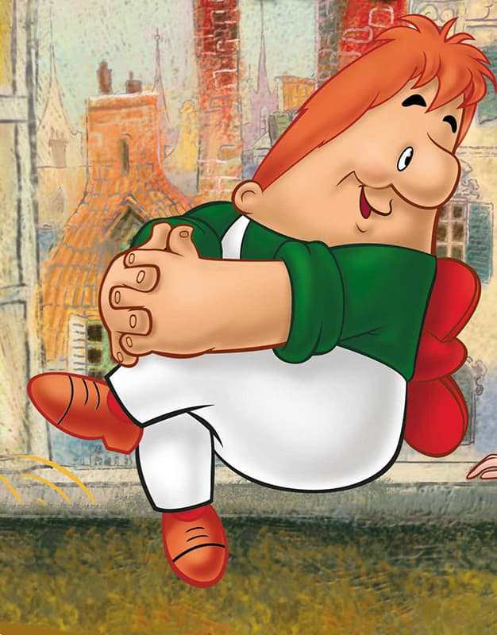

Кто родители Карлсона?
Карлсон, мягко говоря, существо необычное: невысокий, но уже взрослый мужчина с пропеллером на одежде (судя по книге, аппарат точно не прикреплен к телу) неизвестно чем занимается в свободное от встреч с Малышом время. Как признается сам персонаж, его мать – мумия, а отец – из семейства гномов.
Откровенный толстяк настаивает на том, чтобы его называли в меру упитанным, иначе обидится. Растрепанные рыжие волосы и комбинезон – неотъемлемые детали образа Карлсона, которые изобразила Илон Викланд, и с тех пор персонаж представляют только так. Общительный экстраверт эгоистичен, любит внимание и похвалу, а также сметает все сладости на своем пути
Однажды Астрид написала сказку для взрослых, где критиковала драконовскую налоговую систему, принятую правительством, а когда она узнала, что ее друга, режиссера Ингмара Бергмана, арестовали за неуплату налогов, то слегла в больницу с диагнозом нервный срыв. Когда же налог на ее собственные доходы составил 102 процента, Линдгрен начала выступать по телевидению, готовить статьи и доклады для парламента с единственной целью: нанести сокрушительное поражение правящей партии социал-демократов на выборах в том же году. Они проиграли — и это стало ее первой значительной политической победой.
Ее собственная политическая программа больше основывалась не на экономических вопросах, а на защите прав детей и... животных. Она присоединилась к Полу Маккартни в борьбе за жизни то ли морских котиков, то ли еще каких-то вымирающих зверьков, она активно призывала к улучшению условий содержания животных на фермах. «Каждая свинья имеет право на счастливую свинячью жизнь», — писала Линдгрен в открытом письме премьер-министру. И именно он — высшее достижение в жизни Линдгрен! — поручил ей составление соответствующего законопроекта. В 1988 году он был принят и получил имя писательницы: «закон Лекс-Астрид». Свиньи и «зеленые» остались довольны